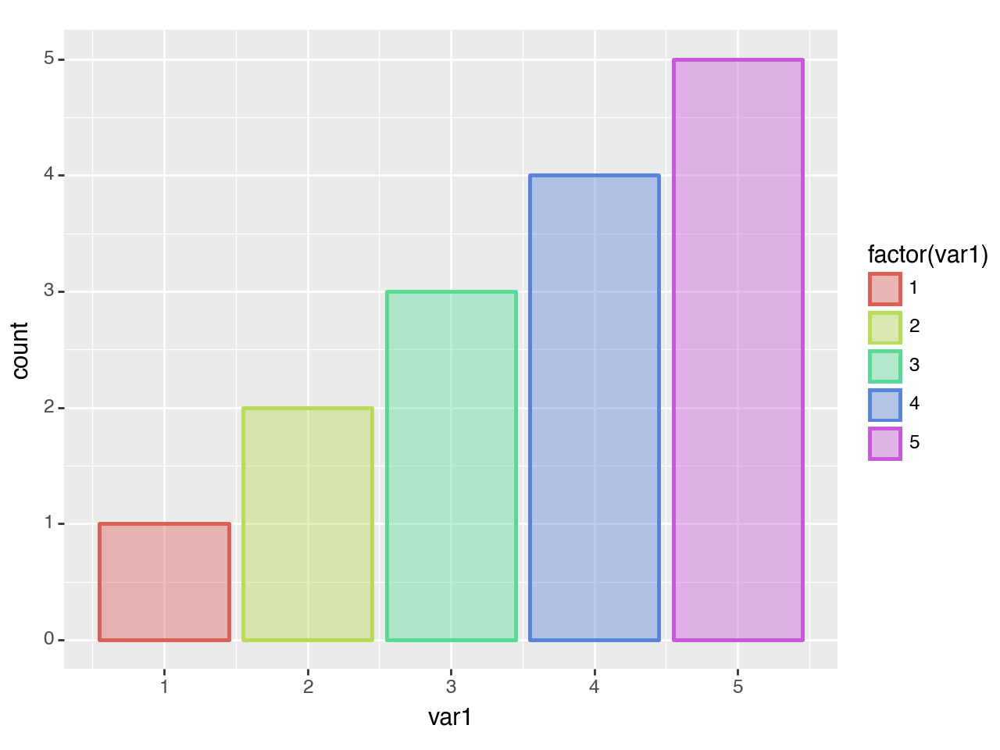

import pandas as pd
import numpy as np
from plotnine import (
ggplot,
aes,
after_scale,
geom_bar,
theme_classic
)after_scale
The bars in geom_bar have two aesthetics that control the coloring; fill for the interior and color for the boundary/edge. Using after_scale we can create a matching combination of these two.
Start off with a mapping to the color.
df = pd.DataFrame({
'var1': [1, 2, 2, 3, 3, 3, 4, 4, 4, 4, 5, 5, 5, 5, 5]
})
(ggplot(df, aes('var1', color='factor(var1)'))
+ geom_bar(size=1)
)
<Figure Size: (640 x 480)>We can match the color with the fill.
(ggplot(df, aes('var1', color='factor(var1)'))
+ geom_bar(aes(fill=after_scale('color')), size=1)
)
<Figure Size: (640 x 480)>As after_scale takes an expression, for the fill aesthetic we can modify the color by adding to it an alpha channel i.e. '#AABBCC' to '#AABBCC66'.
(ggplot(df, aes('var1', color='factor(var1)'))
+ geom_bar(aes(fill=after_scale('color + "66"')), size=1)
)
<Figure Size: (640 x 480)>We rely on the fact that you can append a string to all elements of a pandas series
pd.Series(['#AABBCC', '#112233']) + '66' == pd.Series(['#AABBCC66', '#11223366'])With a fitting theme.
(ggplot(df, aes('var1', color='factor(var1)'))
+ geom_bar(aes(fill=after_scale('color + "66"')), size=1)
+ theme_classic()
)
<Figure Size: (640 x 480)>